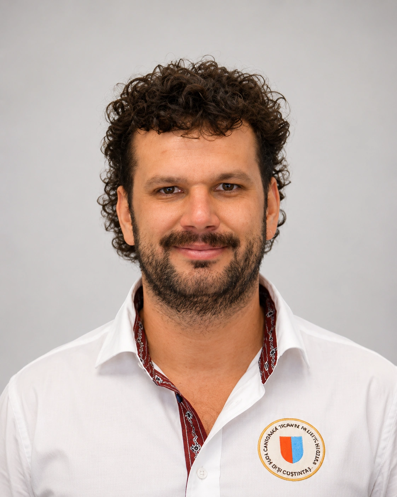
PräsidentTESSINER KANTONAL-SCHWINGERVERBAND (TKSV)
Eine Tradition
zum gemeinsamen
Erleben.
Sägemehl unter den Füssen.
Respekt in jedem Handschlag.
Schwingen – auch im Tessin.
SCHWEIZER WURZELN. TESSINER HERZ.SEIT 2012
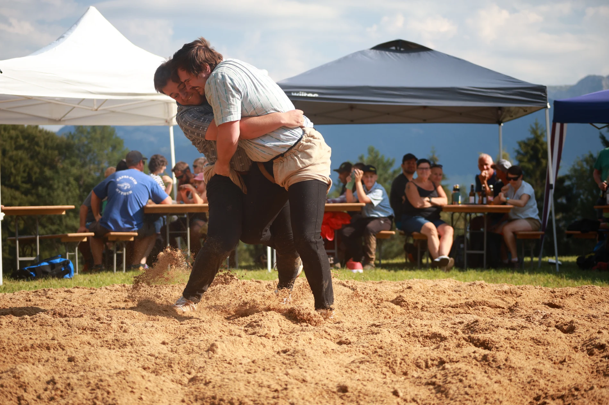
Steig in den SägemehlringKostenloses Training ab 8 Jahren↗Werde Teil des TKSVMitglied werden ab 20 CHF pro Jahr↗Schwingen an deinem AnlassEine Tradition zum Entdecken und Ausprobieren↗
WER WIR SIND
Ein Verband.
Viele Menschen, eine Leidenschaft.
Der TKSV fördert und verbreitet das Schwingen im Tessin. Wir begleiten Jung- und Aktivschwinger in einem Sport, der Technik, Mut und Respekt verbindet, und pflegen dabei Tradition und Verbundenheit mit unserer Region.
Mitglieder, Freiwillige und Partner ermöglichen diesen Weg. Wir gehören demISV sowie dem nationalen Verband ESV.
10 + 7Aktive und JungschwingerUnsere Schwinger ↗6VorstandsmitgliederLerne den Vorstand kennen ↗251PassivmitgliederWerde auch du Mitglied ↗1EhrenmitgliedUnsere Wurzeln ↗1Sponsor / PartnerWer uns unterstützt ↗
Passivmitglieder: Generalversammlung 2025. Aktive und Jungschwinger: Stand November 2026.

Unser Team
Jung- und Aktivschwinger. Gemeinsam.
10 Aktivschwinger und 7 Jungschwinger – vereint durch die Leidenschaft fürs Schwingen.
EIN KLEINER BEITRAG, JEDES JAHR20 CHFAB · PRO JAHR
Werde auch du Teil des TKSV.
Du musst nicht selbst schwingen, um zu uns zu gehören. Als Passivmitglied wirst du zur Generalversammlung eingeladen und bleibst über das Schwingen informiert. Dein Beitrag ermöglicht die Ausübung und Verbreitung dieses Sports im Tessin.
Mitglied werdenDIE MENSCHEN HINTER DEM VERBAND
Der Vorstand
Gesichter, Rollen und Kontakte.
Wir sind hier, um dir zu helfen.
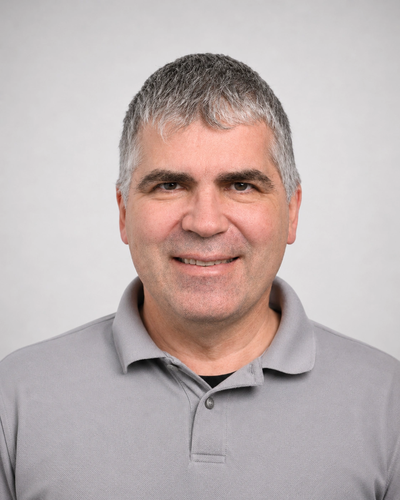
VizepräsidentPaolo Donelli
Dem TKSV schreiben ↗Ruth Crotta
crotta@bluewin.ch+41 79 696 91 79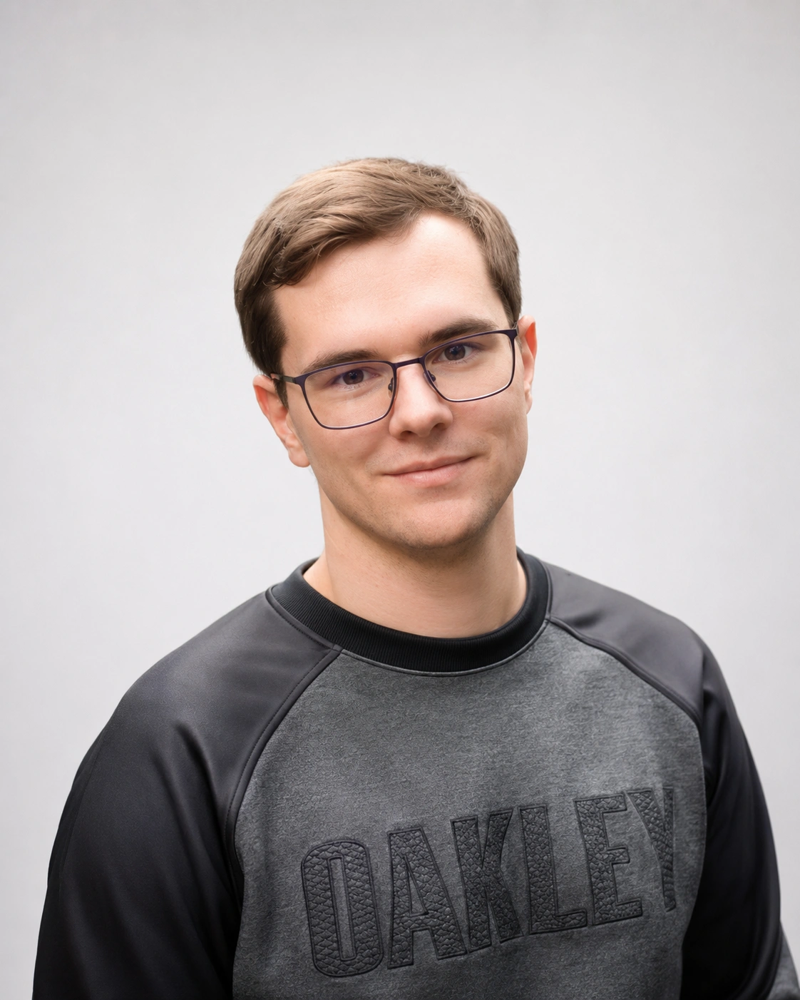
Technischer LeiterRobin Crotta
robcrotta@gmail.com+41 77 419 29 81Oscar Facchini
Dem TKSV schreiben ↗Boris Baroni
sviluppo@lottasvizzera.ch+41 76 305 95 76EHRENMITGLIED
Edi Ritter · Erster Präsident und einer der Wegbereiter für die Wiederbelebung des Schwingens im Tessin.
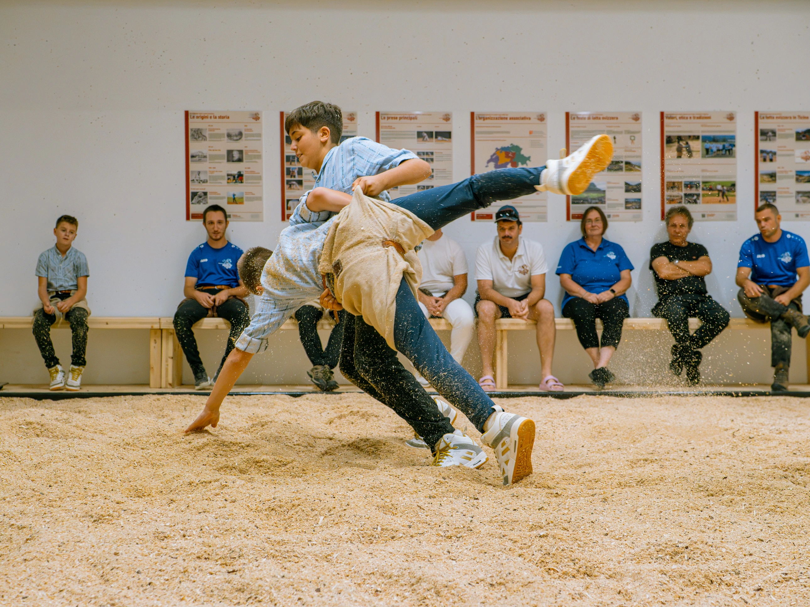
TRAINING
Der erste Schritt?
Komm zum Schnuppertraining.
Wir erwarten dich in unserer Schwinghalle in der CMFG Arena in Sigirino. Gemeinsam lernen wir Griffe, trainieren Gleichgewicht, Kraft und Koordination und entwickeln uns im Sägemehlring weiter.
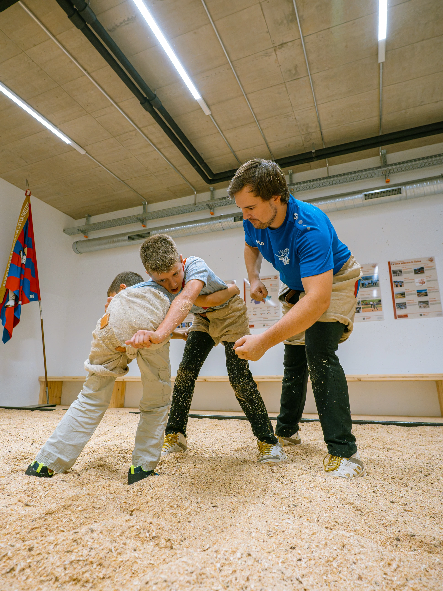
JEDEN DONNERSTAG
18:30 — 20:00
- Jungschwinger
- 8–15 Jahre
- Aktivschwinger
- 16 Jahre und älter
- Material
- Vom TKSV bereitgestellt
- Teilnahme
- Kostenlos
Für Schwinger ist das Training kostenlos. Wenn möglich, bitten wir eine verwandte oder befreundete Person, den Verband als Passivmitglied zu unterstützen.
Für ein Schnuppertraining anmelden Technischen Leiter kontaktieren →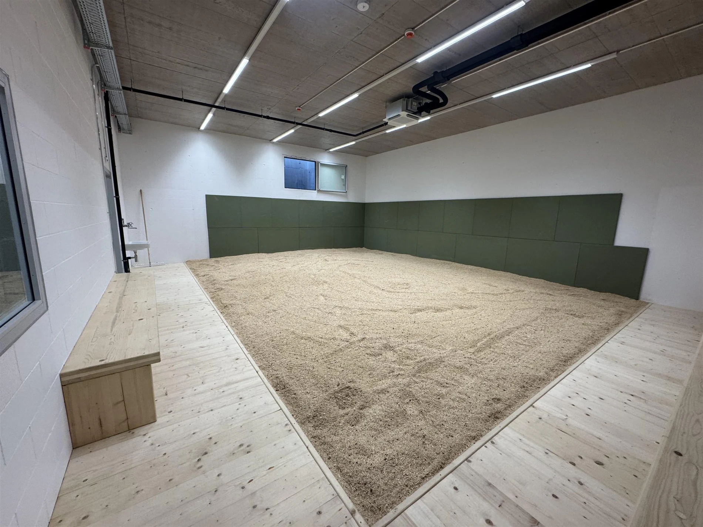
CMFG Arena
Via Ciossa 5
6806 Sigirino · Monteceneri
Vom Parkplatz zur Schwinghalle
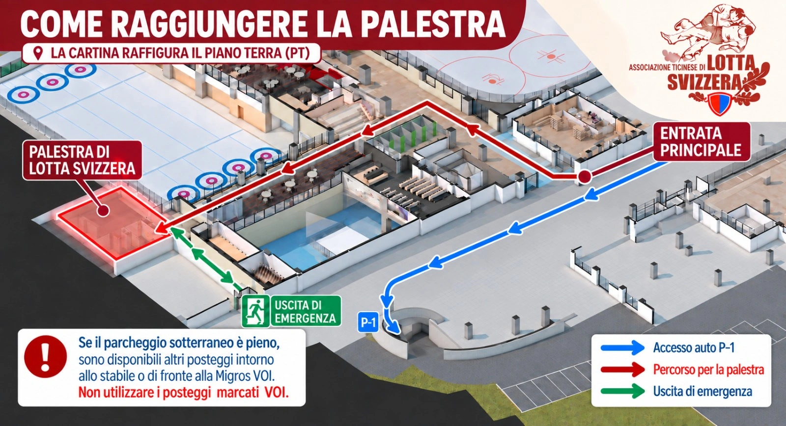
Ist die Tiefgarage voll, stehen weitere Parkplätze rund um das Gebäude oder gegenüber der Migros VOI zur Verfügung. Die mit VOI markierten Parkplätze dürfen nicht benutzt werden.
UNSERE GESCHICHTE
Wurzeln mit Geschichte.
Ein neues Zuhause.
Von den ersten Eisenbahnerklubs bis zur Schwinghalle in Sigirino: Im Tessin fanden sich immer wieder Menschen, die dem Schwingen Zukunft gaben.
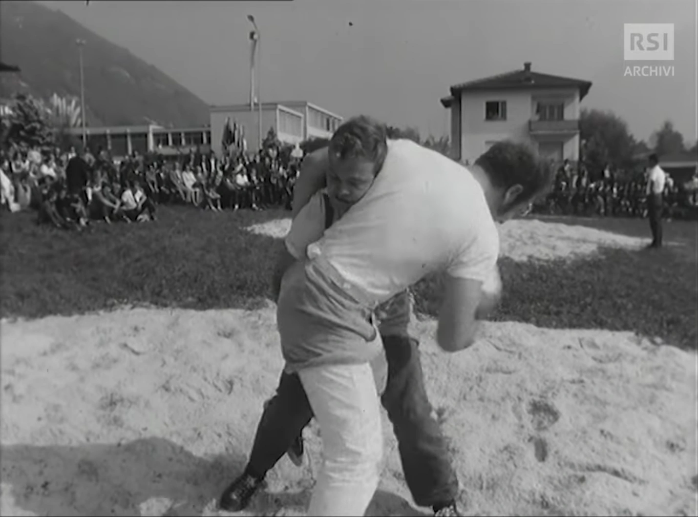
Die ersten Spuren im Tessin
1895 entsteht in Bellinzona ein Klub, vorwiegend getragen von deutschsprachigen Arbeitern der Gotthardbahn; 1904 wird er aufgelöst. 1920 schliesst sich der Schwingklub Airolo dem Urner Verband an, doch auch diese Initiative ist nur von kurzer Dauer. Vorführungen in Bellinzona 1937 und Sementina 1971 halten den Sport sichtbar, ohne bereits eine dauerhafte Struktur zu schaffen.
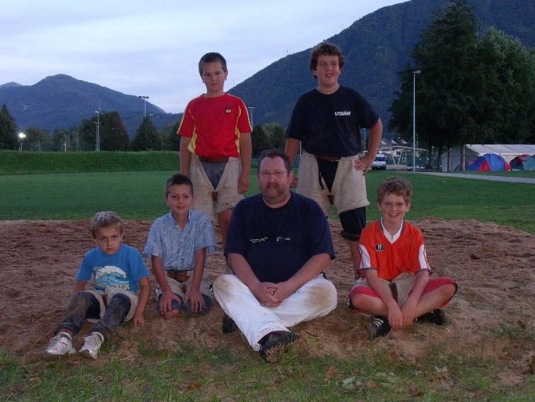
Neubeginn in Tenero
Nach fast vierzig Jahren kehrt das Schwingen zurück. An der Sportissima in Tenero machen Edi Ritter und der Schwingklub Erstfeld den Sport bekannt. Am 21. September 2011 absolviert die Gruppe im Nationalen Jugendsportzentrum Tenero ihr erstes offizielles Training.
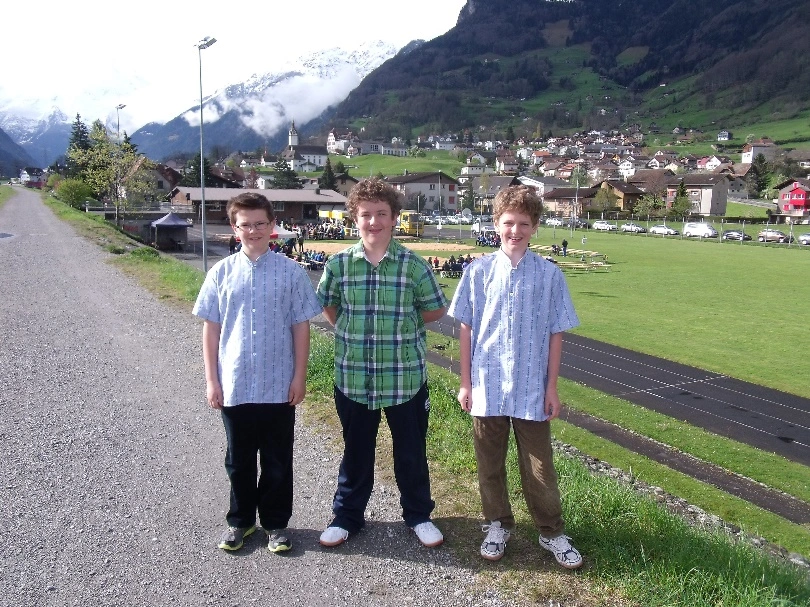
Erstes Schwingfest, erster Zweig
Drei Tessiner Jungschwinger nehmen am Schwingfest in Attinghausen teil. Robin Crotta gewinnt den ersten Zweig der Gruppe – der sportliche Weg des späteren Verbands beginnt.
Der TKSV entsteht
Die Gründungsversammlung in Camorino gibt der Bewegung eine dauerhafte Struktur. Edi Ritter wird erster Präsident; Training, Reisen und Ausbildung werden fortan als Verband koordiniert.
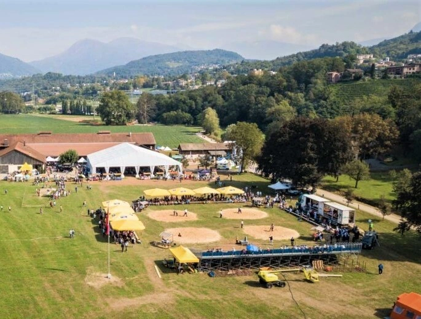
Das Schwingen erreicht die Region
Nach Jungschwingeranlässen in Tenero und Lugano organisiert der TKSV in Gudo zwei Schwingfeste für Nichtkranzer mit rund 100 Teilnehmenden. 2019 wird der TKSV Teil des ISV und damit der ESV-Struktur. Die traditionellen Schweizer Spiele in Vezia vereinen rund 150 Schwinger und insgesamt etwa 5’000 Zuschauer.
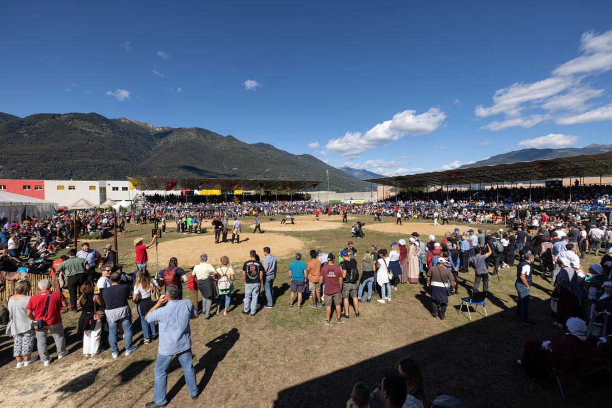
Das erste Tessiner Kantonalschwingfest
Cadenazzo ist Gastgeber des ersten Tessiner Kantonalschwingfests mit Kranzabgabe: rund 200 Schwinger und 3’500 Zuschauer. Sven Schurtenberger gewinnt den Schlussgang gegen Dario Gwerder.
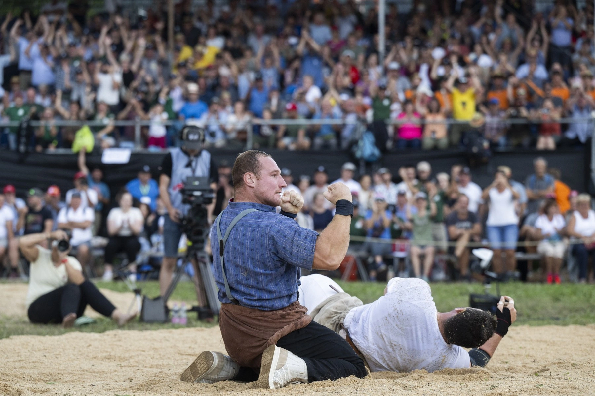
Das zweite Tessiner Kantonalschwingfest
In Biasca treten 206 Schwinger vor 4’990 Zuschauern an; 29 Kränze werden abgegeben. Joel Wicki gewinnt mit 59.25 Punkten – das Schwingen bestätigt seine starke Verankerung im Tessin.
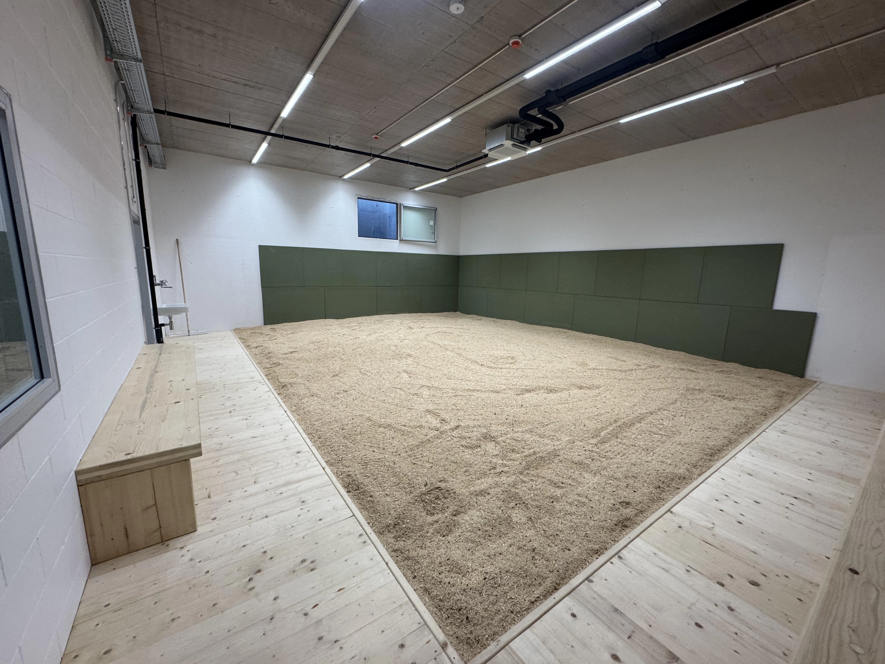
Ein Zuhause in Sigirino
In der CMFG Arena eröffnet die erste Tessiner Halle, die vollständig dem Schwingen gewidmet ist. Ein dauerhafter Trainingsort für Jung- und Aktivschwinger während des ganzen Jahres. Damit macht der TKSV einen historischen Schritt in seinem Auftrag, den Schweizer Nationalsport auch südlich der Alpen zu pflegen, bekannt zu machen und weiterzugeben.
ANLÄSSE
Wir bringen das Schwingen
an deinen Anlass.
Ob Dorffest, Messe oder Sporttag: Wir nehmen gerne an regionalen Anlässen teil, um das Schwingen zu zeigen und ausprobieren zu lassen.
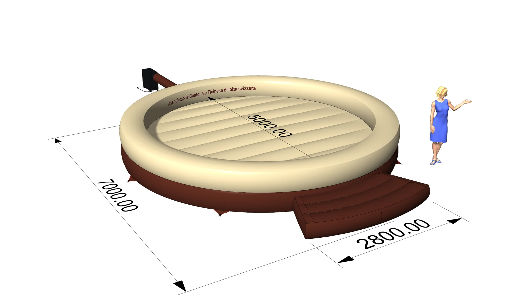
Eine Tradition zum Ausprobieren.
Mit unserer aufblasbaren Schwingmatte können wir Vorführungen und Schnupperangebote auch ausserhalb der Schwinghalle anbieten. Erzähle uns von deinem Anlass; gemeinsam klären wir Verfügbarkeit und Organisation.
- Schwingvorführungen
- Schnupperangebote zum Kennenlernen
- Teilnahme an Dorfanlässen und Messen
PARTNER
Unterstützung, die
unseren Sport weiterbringt.
Unsere Partner gehören zum Vereinsleben. Ihr Beitrag unterstützt den Nachwuchs, den Sportbetrieb und die Verbreitung des Schwingens im Tessin.
GEMEINSAM ETWAS AUFBAUEN
Werde unser Partner.
Hilf uns, den Nachwuchs zu fördern und dem Schwingen im Tessin eine Zukunft zu geben. Vom Training über Wettkämpfe bis zu Anlässen finden wir eine Zusammenarbeit, die zu deinem Unternehmen und den Werten unseres Sports passt.
Entdecken Sie die Möglichkeiten für die ZusammenarbeitDOKUMENTE
Das Vereinsleben des TKSV
zum Nachlesen.
Formulare, Berichte und nützliche Informationen rund um den Verband.
Möchtest du schnuppern, uns unterstützen oder einen Anlass organisieren?
Schreib uns – wir verbinden dich mit der richtigen Ansprechperson.
Der Vorstand und alle Kontakte ↗Training · Robin Crotta ↗Mitgliedschaft · Ruth Crotta ↗Partner · Boris Baroni ↗
Folge uns auf Instagram ↗